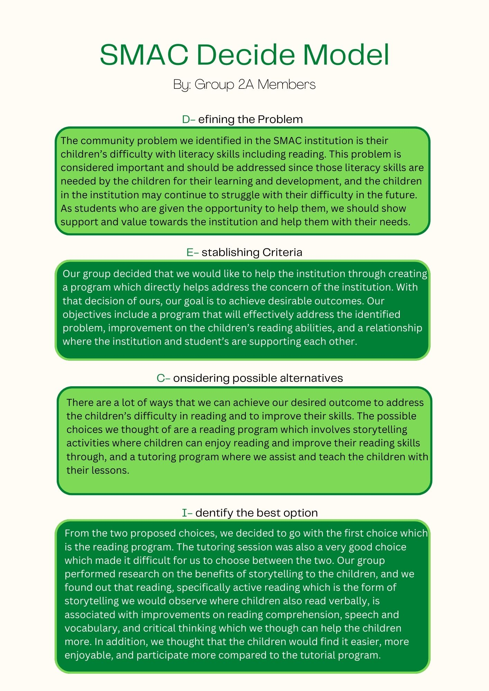
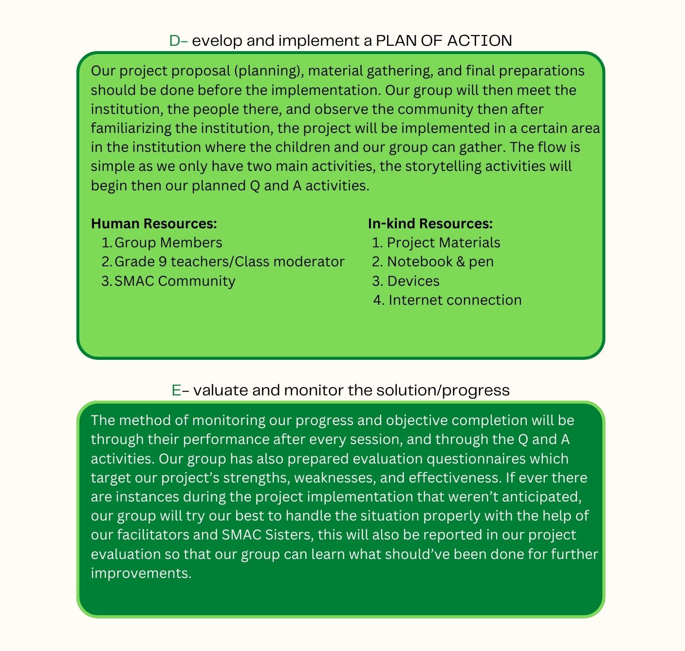

 
About the Web Designer:
Ellysse Gabriel Ciano, 9-Favre
Gabriel is a 14-year-old AdDU 9th grader coming from the section St. Peter Favre. He is the designer of this webpage, and is also responsible of collecting needed information. He is a talented person and does sports. He claims to always have appreciated all the gifts that God has given him.
Back to Top